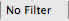
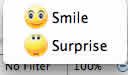
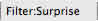

XMind's powerful filter function offers tremendous productivity improvements for large, complex maps. Filtering allows users to make only specific portions of the map content visible, based on certain topic attributes such as markers and labels, to facilitate faster information review and understanding.
You can easily create quick filters, use more advanced filters, and remove filters. Here's how:
To Quick filter:
- On a map that has topic attributes that you want to filter, i.e. various marker types (see example below), click the 'no filter' link on the bottom of XMind editor window.
- Select a marker (e.g. the "Suprise" marker selected in the example) in the drop-down list  to filter the topic according to that attribute.
- The marked topic(s) will be displayed with a highlight, and "No Filter" will be replaced with "Filter: Surprise".
-
Click on the filtered attribute (e.g. "Surprise" at the bottom of the window) again to highlight the lighting contrast between filtered and unfiltered topics.
-


To Perform Advanced filtering:
- Open Advanced Filter View.
- Select the marker(s) and/or label(s) that you want to use as filters.
- The topic(s) with the filtered attributes, e.g. selected marker(s) and/or label(s), will be displayed with highlights.
-
By using the advanced filter view toolbar, you can.
- Remove the filter.
- Increase or Reduce the lighting contrast of the filter effect.
- Choose "Show other marked Topics", or"Show other labeled Topics" in drop-down menu.

To Use the Remove Filter Function:
- Double click on the filter attribute, e.g. 'Filter: Surprise' at the bottom of the editor window.
- Click the 'Remove Filter' button on the advanced filter view toolbar.
Note: By using Quick filter, you can only select one attribute marker at a time. Advanced Filter allows you to select multiple attributes at a time.